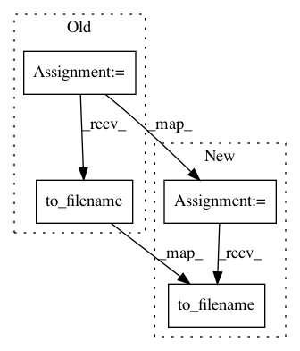

74c014b048f6e4df6780bb767702a852b1beba1c,pynets/dmri/estimation.py,,create_anisopowermap,#Any#Any#Any#,60
Before Change
print("Generating anisotropic power map to use for registrations...")
nodif_B0_img = nib.load(B0_mask)
dwi_data = np.asarray(img.dataobj)
for b0 in sorted(list(np.where(gtab.b0s_mask==True)[0]), reverse=True):
dwi_data = np.delete(dwi_data, b0, 3)
anisomap = anisotropic_power(sf_to_sh(dwi_data, gtab_hemisphere, sh_order=2))
anisomap[np.isnan(anisomap)] = 0
masked_data = anisomap * np.asarray(nodif_B0_img.dataobj).astype("bool")
anisopwr_path = "%s%s" % (os.path.dirname(B0_mask), "/aniso_power.nii.gz")
img = nib.Nifti1Image(masked_data.astype(np.float32), aff)
img.to_filename(anisopwr_path)
nodif_B0_img.uncache()
del anisomap
return anisopwr_path, B0_mask, gtab_file, dwi_file
After Change
print("Generating anisotropic power map to use for registrations...")
nodif_B0_img = nib.load(B0_mask)
dwi_data = np.asarray(img.dataobj)
for b0 in sorted(list(np.where(gtab.b0s_mask==True)[0]), reverse=True):
dwi_data = np.delete(dwi_data, b0, 3)
anisomap = anisotropic_power(sf_to_sh(dwi_data, gtab_hemisphere, sh_order=2))
anisomap[np.isnan(anisomap)] = 0
masked_data = anisomap * np.asarray(nodif_B0_img.dataobj).astype("bool")
img = nib.Nifti1Image(masked_data.astype(np.float32), aff)
img.to_filename(anisopwr_path)
nodif_B0_img.uncache()
del anisomap
return anisopwr_path, B0_mask, gtab_file, dwi_file
In pattern: SUPERPATTERN
Frequency: 3
Non-data size: 4
Instances
Project Name: dPys/PyNets
Commit Name: 74c014b048f6e4df6780bb767702a852b1beba1c
Time: 2020-03-05
Author: dpisner@utexas.edu
File Name: pynets/dmri/estimation.py
Class Name:
Method Name: create_anisopowermap
Project Name: nipy/dipy
Commit Name: d2d840e663ef14a39ae8ebc4f17400be384a9ade
Time: 2013-12-23
Author: mrbago@gmail.com
File Name: doc/examples/streamline_tools.py
Class Name:
Method Name:
Project Name: nilearn/nilearn
Commit Name: c9d1557a315998f582af07dbac731b3442f6b09a
Time: 2018-03-08
Author: dkamalakarreddy@gmail.com
File Name: examples/03_connectivity/plot_rest_clustering.py
Class Name:
Method Name: